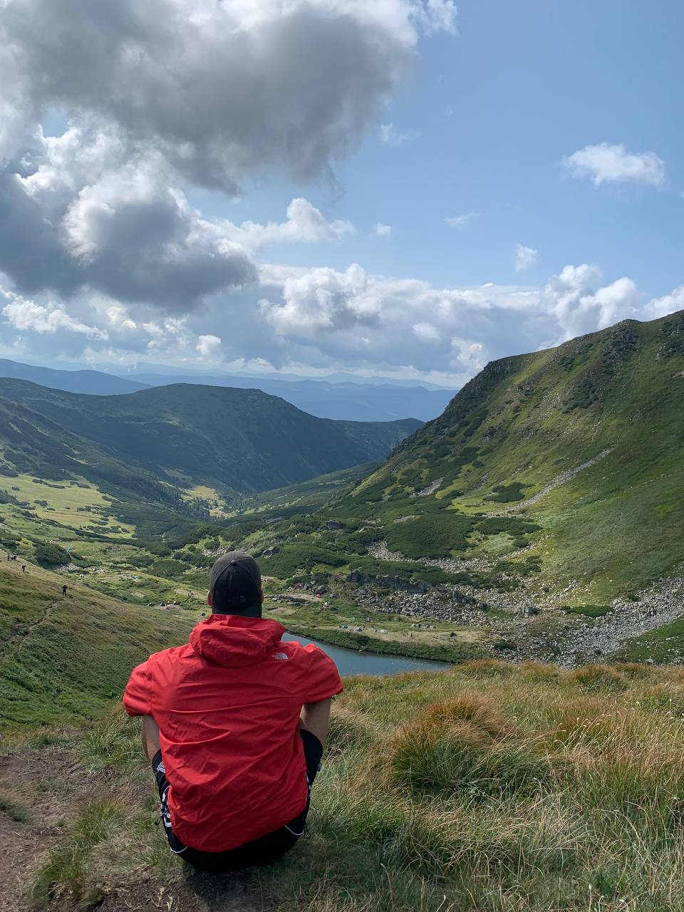

Розробив сайт студент групи Ж-11, Дівинець Роман
Народився 15 серпня 2003 року народження. Здобув початкову освіту у Велятинській школі, а також було отрмано диплом молодшого спеціаліста "Технік-програміст" по закінченню навчання в Природничо-гуманітарному фаховому коледжі ДВНЗ "УжНУ".
